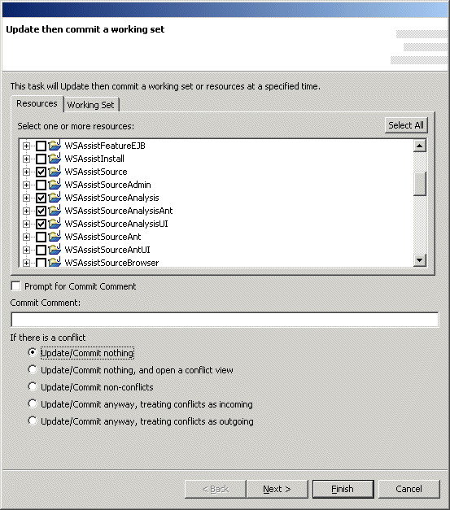

Schedule Catch Up/Release Working SetNote: This feature is not available under Eclipse 3.0 and above  To schedule a CVS Catch Up & Release Working Set task to be run at a specified time, open the scheduler view, right-click to access the popup menu, select the "New" submenu, and then select "Catch Up/Release Working Set". This opens the scheduler wizard so that catch-up/release working set operation may be configured. All resources and Working Sets known to the system are shown in the list on each tab page. If you wish to create a new working set or edit an existing one, click the "New/Browse" button on the Working Set page. In the event of conflicts, options are provided to do nothing, open a conflict view, catch up/release only non-conflicts, or catch up/release everything while treating conflicts as either incoming or outgoing. Click the "Next >" button to schedule when the message is to be displayed. |